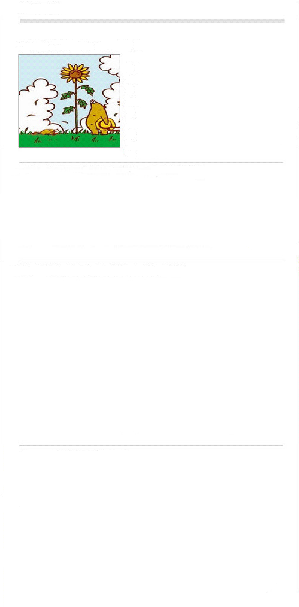

传媒资讯分类
- 报刊 NEWSPAPERS
- 光电 TV&RADIO
- 网络 INTERNET
- 出版 PUBLISHING
- 广告 ADVERTISEMENTS
- 精英 MARKETING
- 其它 OTHERS
传媒观点
满文军现央视与酒井法子被解雇
新学期开学了，各类大小书店又出现了教辅读物热卖的现象。如此品种繁多的教辅读物，令许多家长和孩子无法选择。更令他们头痛的是，许多教辅读物内容雷同，质量低劣，错误百出。“教辅教辅，乱得离谱”，多、乱、差，成为目前教辅读物的基本现实……
整治教辅书市场别忘转变教育理念
在5号晚上央视一套《实话实说》播出的关于明星吸毒的最新一期节目中，满文军以视频的方式“亮相”，他公开表示自己非常想念太太，并坦言希望能够在工作上以新的形象重新面对歌迷……
整治教辅书市场别忘转变教育理念
9月2日互联网迎来了40岁生日。40年来互联网产业得到了飞速发展。然而，随着互联网的进一步普及……
热门标签
新媒体 CMMB 视频网站 网瘾 山寨 广告收入 春晚 腾讯 人肉搜索 百度 地市报 出版集团 湖南卫视 央视 汶川地震 瑞星 裁员 雅虎 招聘 艳照门
传媒要闻
广东紧急叫停一起“休刊”事件
广东省新闻出版主管部门近期遭遇了一场突如其来的“休刊”事件：就在给发行量逾十万份的《家家乐》杂志发出准许休刊的批准后，由于职工反对，这份“休刊”通知又被紧急“叫停”。
而记者日前在调查中了解到，两次方向相反的“叫停”背后，是本来一直在传统媒体经营轨道上运行的杂志社，在试图构建…… 查看详情>> 直接体现，种种经验教训值得相关产业人员高度关注和警惕。 联通跌出通讯网络广告投放前三 移动稳居榜首
而记者日前在调查中了解到，两次方向相反的“叫停”背后，是本来一直在传统媒体经营轨道上运行的杂志社，在试图构建…… 查看详情>> 直接体现，种种经验教训值得相关产业人员高度关注和警惕。 联通跌出通讯网络广告投放前三 移动稳居榜首
联通跌出通讯网络广告投放前三 移动稳居榜首
昨天，根据易观国际产业数据库研究显示，今年8月通讯行业品牌网络广告投放继续保持稳定增长，环比增长8.6%。中国联通由于减少了部分投放，跌出了一直占据的投放排行前三。
数据显示，运营商及其服务的网络广告投放是行业主要的增长动力，环比增长达到19%。其中中国移动、中国电信继续占据行业中投放额排行…… 查看详情>>
数据显示，运营商及其服务的网络广告投放是行业主要的增长动力，环比增长达到19%。其中中国移动、中国电信继续占据行业中投放额排行…… 查看详情>>
央视中秋晚会将全球直播 劲吹古典中国风
今晚会将落户有“月之故乡”之称的江西省宜春市。晚会主打“古典中国风”，将在古韵新风的交相辉映中为观众奉献一台月光盛宴。
中秋晚会总导演郭霁红介绍说，这台名为《宜春月·中国情》的晚会由“素月分辉，明河共影”“情月相通，山水为证”“心月相依，九州形胜”三个富有意蕴的华章构成。晚会将结合宜春当地独特的“月亮文化”，通过融合歌曲、舞蹈、模特走秀、民乐、戏曲、杂技表演、配乐朗诵等多种节目形态，展现欢度中秋、思念亲情、民族团结和盛世和谐的主题。
“古典中国风”作为本届中秋晚会的特色将在节目中彰显。如将古雅的青花瓷、红瓷、法兰瓷的美学趣味与现代时装相结合，阐释、挖掘江西古老独特的瓷文化和韵味等。晚会还将编创一组由中国古典诗词谱曲，或为中国著名古曲填词的古诗词特别节目，用视听语言表达诗情画意。查看详情>>
中国电影呼唤提升文化品质
近年来，中国电影不断跃升新台阶，引来世人关注。然而，热闹背后的软肋，还是很明显的。那就是我们的电影不仅很难在全球市场打开局面，在国内市场的口碑也是骂多赞少。
国产大片刚问世的时候，我们过于模仿好莱坞的视觉场景，在影片情节上遭人诟病。曾经一度，为了走向世界，我们的电影复制古装＋武打模式，效果不佳。今天，由于主要的商业电影院集中在一线城市，几十家主要电影院决定了一半的票房收入。这些主要电影院不仅仅是集中北京武汉上海等有限的一二十个城市，甚至于就是集中在北京的华星、万达，上海的永华等主要电影院。等于中国的电影艺术是整个电影院的艺术，不是一个全民的艺术。这些电影院来什么人，中国电影人就拍什么电影，这是一个非常令人难堪的现状。 查看详情>>

国产大片刚问世的时候，我们过于模仿好莱坞的视觉场景，在影片情节上遭人诟病。曾经一度，为了走向世界，我们的电影复制古装＋武打模式，效果不佳。今天，由于主要的商业电影院集中在一线城市，几十家主要电影院决定了一半的票房收入。这些主要电影院不仅仅是集中北京武汉上海等有限的一二十个城市，甚至于就是集中在北京的华星、万达，上海的永华等主要电影院。等于中国的电影艺术是整个电影院的艺术，不是一个全民的艺术。这些电影院来什么人，中国电影人就拍什么电影，这是一个非常令人难堪的现状。 查看详情>>
传媒要闻
- 西班牙奔牛节一男子丧生意
- 游客巴西度假亲吻女儿
- 广州民营油站联手降价
- 粤港澳大反黑千余疑犯落网
- 行动规模超北京奥运
- 经核实乌市已有531人被刺
- 假唱假演奏最高罚款3000元
热评资讯
- 招聘会上简历无人问津
- 大专生含泪
- 逼问官员北大教授孙东东
- 老上访户99%有
- 为小品《不差钱》说些公
- 政干预疫情上报与病态官
- 北京市民通过网络记录
- 湖南媒体人凭什么创造奇
从《朝闻天下》改版后的反应来看，人们原本对央视的挑剔，还是恨铁不成钢的因素居多，这不，稍有点进步，立刻就引来赞声一片啦。不抛弃不放弃，央视的忠实观众做到了，下面就要看央视在改革的路上能走多远，是会成为央三多还是央阿斗，咱不妨静心看看再说。
- 朝闻天下》改版 两任
- 纽扣提高一颗 央视补上一
- 央视改版 赞一个先
- 央视《朝闻天下》悄然
- 央视“变脸”，除了亲民
- 《朝闻天下》为《新闻联·
- 细数《朝闻天下》6大变化
- 为《朝闻天下》首次引入
- 央视《朝闻天下》改版“
- 央视新闻悄然变脸 美女主
- 《开心辞典》将登央三